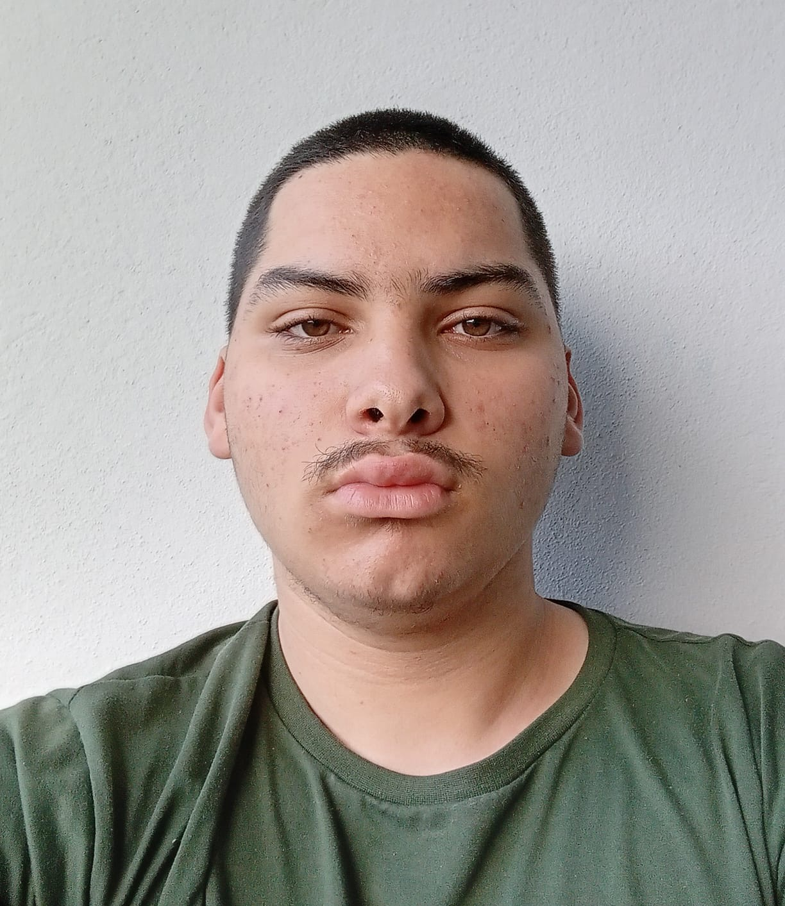
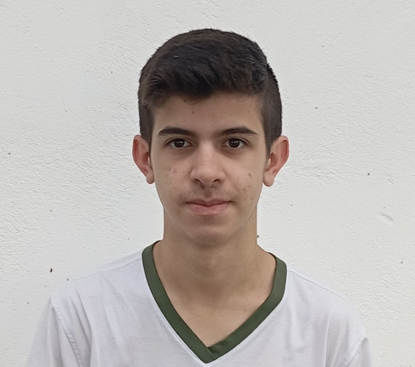
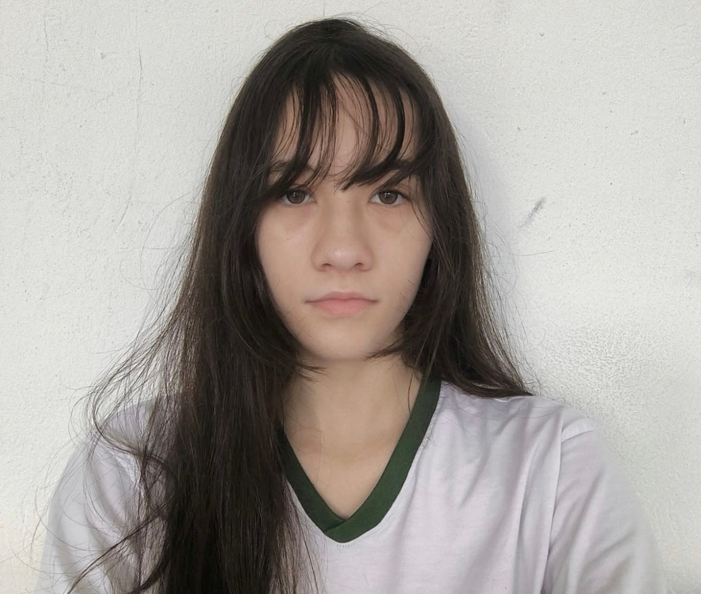
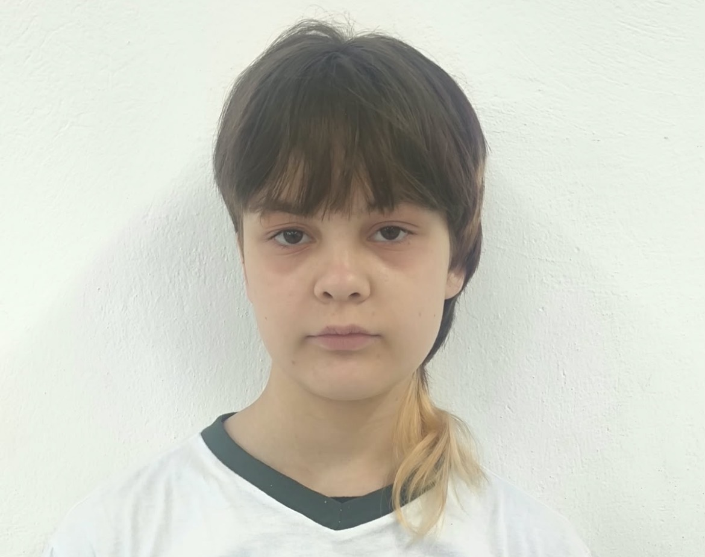
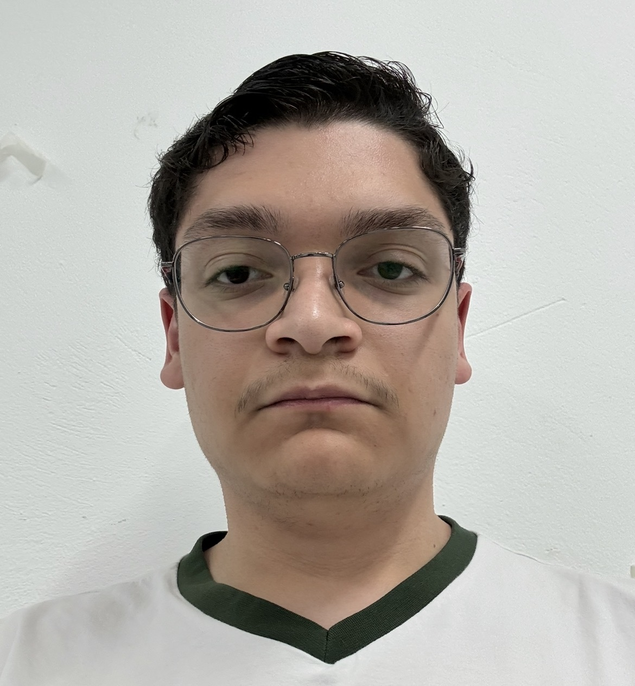

Nossa Equipe
Quem somos?
Somos um grupo de estudantes de informática e decidimos fazer esse site informativo de história, com a intenção de reunir os mais variados conhecimentos sobre a civilização Maia em um só lugar. Sabemos que às vezes pode ser difícil encontrar tudo o que precisamos para nossos trabalhos e/ou estudos, então se está com dúvidas, ou apenas gostaria de aprender algo hisórico novo, este é o lugar perfeito!
-

Emanuel
Coordenador do Projeto
Responsável pelo desenvolvimento do index inicial do projeto, que serviu como base para a estrutura das demais páginas.
Também ficou Responsável pela criação e desenvolvimento da página de Quiz, contribuindo para tornar o projeto mais interativo e dinâmico para os visitantes.
-

Davi
Secretário do Projeto
Responsável pela parte inicial do site, desenvolvendo um resumo geral sobre a Civilização Maia para apresentar aos visitantes uma base sobre o tema logo ao entrarem no projeto.
Também ficou responsável pelo Instagram do projeto, realizando a criação e organização dos posts para divulgar o trabalho e apresentar os conteúdos da Civilização Maia.
Além disso, foi responsável pela elaboração das atas das reuniões, registrando os assuntos discutidos, as decisões tomadas e as atividades realizadas por cada integrante ao longo do desenvolvimento do projeto.
-

Ana
Integrante da equipe
Responsável pelo desenvolvimento do Figma do projeto, contribuindo para a organização visual e planejamento da estrutura do site.
Também ficou responsável pelas páginas de informação, realizando pesquisas, organização e desenvolvimento dos conteúdos sobre a Civilização Maia.
-

Nicolly
Integrante da equipe
Responsável por auxiliar no desenvolvimento do Figma, contribuindo para a organização e estruturação visual do projeto.
Também ficou responsável pela correção ortográfica dos conteúdos e pelo desenvolvimento da página de formulário, contribuindo para a organização e funcionalidade do site.
-

Henrique
Integrante da equipe
Responsável pela organização e gerenciamento do GitHub do projeto, contribuindo para a organização dos arquivos e do desenvolvimento do site.
Também ficou responsável pelo desenvolvimento da página "Sobre Nós", apresentando os integrantes e informações relacionadas à equipe.